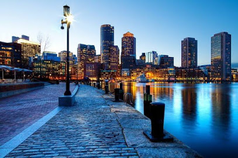
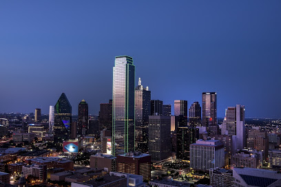
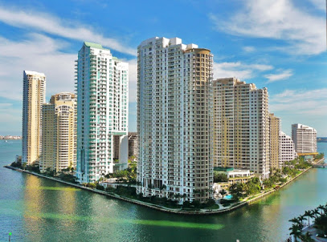
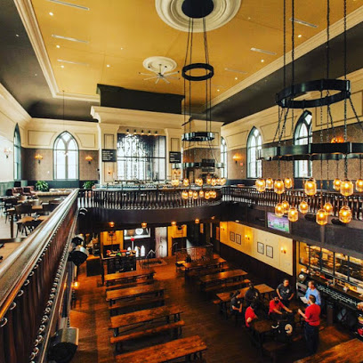
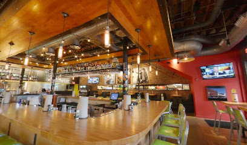
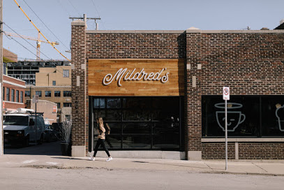
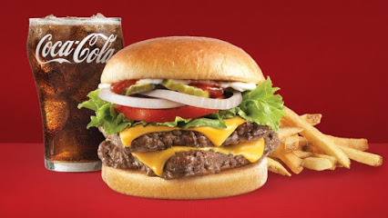
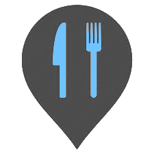

<!DOCTYPE html>
<html>
    <head>
        <title>Basemap</title>
		<!-- Leaflet Css-->
		<link rel="stylesheet" href="https://unpkg.com/leaflet@1.6.0/dist/leaflet.css"
        integrity="sha512-xwE/Az9zrjBIphAcBb3F6JVqxf46+CDLwfLMHloNu6KEQCAWi6HcDUbeOfBIptF7tcCzusKFjFw2yuvEpDL9wQ=="
        crossorigin=""/>
		<!-- Ensure cross platform compatibility -->
		<meta name="viewport" content="width=device-width, initial-scale=1.0, maximum-scale=1.0, user-scalable=no" />
		<!-- Style -->
		<!-- Better Scale Css-->
		<link rel="stylesheet" href="plugins/better-scale/L.Control.BetterScale.css" />
		<!--North Arrow -->
		<link rel="stylesheet" href="plugins/north-arrow/L.Control.Rose.css" />
		<style>
			body {
				padding: 0;
				margin: 0;
			}
			html, body, #mymap {
				height: 100%;
				width: 100vw;
			}
			.row{
				width: 200px;
				margin-left: -15px;
				margin-right: -15px;
				margin-bottom: -10px;
			}
			
			.column-1{
				margin: 3px;
				padding: 1px;
			}
			.column-2{
				z-index:0;
				width: 100%;
			}
			.row:after {
			  content: "";
			  clear: both;
			}
			.description{
				font-size: 90%;
			}
			
		</style>
    </head>

    <body>
		<!--Map-->
		<div id="mymap"></div>
		<!--Noth Arrow -->
		<div id="rose"></div>
		<!-- Java Scripts-->
		<!-- Leaflet js-->
		<script src="https://unpkg.com/leaflet@1.6.0/dist/leaflet.js"
        integrity="sha512-gZwIG9x3wUXg2hdXF6+rVkLF/0Vi9U8D2Ntg4Ga5I5BZpVkVxlJWbSQtXPSiUTtC0TjtGOmxa1AJPuV0CPthew=="
        crossorigin=""></script>
		<!-- Better Scale Js-->
		<script src="plugins/better-scale/L.Control.BetterScale.js"></script>
		<!--North Arrow -->
		<script src="plugins/north-arrow/L.Control.Rose.js"></script>
		<!--Map Data -->
		<script type="text/javascript">
			var cityIcon = L.icon({
				iconUrl: 'images/markers/town.png',
				iconSize:     [30, 30], // size of the icon
				iconAnchor:   [15, 30], // point of the icon which will correspond to marker's location
				popupAnchor:  [-0, -30] // point from which the popup should open relative to the iconAnchor
			});
			
			var resturantIcon = L.icon({
				iconUrl: 'images/markers/resturant.png',
				iconSize:     [30, 30], // size of the icon
				iconAnchor:   [15, 30], // point of the icon which will correspond to marker's location
				popupAnchor:  [-0, -30] // point from which the popup should open relative to the iconAnchor
			});
			//cities markers using bind popup
			var boston = L.marker([42.360057, -71.058906], {icon: cityIcon}).bindPopup('<div class="row"><div class="column-1"><span class="description"><b class="style="font-size:120%;">Boston </b>capital and most populous city of the Commonwealth of Massachusetts in the United States</span></div><div class="column-2"></div></div>'),
				washington    = L.marker([38.907149, -77.036748], {icon: cityIcon}).bindPopup('<div class="row"><div class="column-1"><span class="description"><b class="style="font-size:120%;">washington DC</b>,the U.S. capital is defined by imposing neoclassical monuments and buildings</span></div><div class="column-2"></div></div>'),
				dallas    = L.marker([32.776593, -96.797139], {icon: cityIcon}).bindPopup('<div class="row"><div class="column-1"><span class="description"><b class="style="font-size:120%;">Dallas</b>, a modern metropolis in north Texas, is a commercial and cultural hub of the region</span></div><div class="column-2"></div></div>'),
				chicago    = L.marker([41.878138, -87.630074], {icon: cityIcon}).bindPopup('<div class="row"><div class="column-1"><span class="description"><b class="style="font-size:120%;">Chicago</b>, on Lake Michigan, is among the largest cities in the U.S. Famed for its bold architecture</span></div><div class="column-2"></div></div>'),
				miami    = L.marker([25.759678, -80.192553], {icon: cityIcon}).bindPopup('<div class="row"><div class="column-1"><span class="description"><b class="style="font-size:120%;">Miamin</b>, Miami-Dade County, is the cultural, economic and financial center of Florida</span></div><div class="column-2"></div></div>');
			//Use layer group to group similar data to add to legend
			var citiesLayer = L.layerGroup([boston, washington, dallas, chicago, miami]);
			
			//resturant
			var tafts = L.marker([39.111343, -84.517450], {icon: resturantIcon}).bindPopup('<div class="row"><div class="column-1"><span class="description"><b class="style="font-size:120%;">Tafts Ale House</b>,Classic brewpub serving artisanal beers, steaks & salads in a former, 19th-century church.</span></div><div class="column-2"></div></div>'),
				Hopdoddy  = L.marker([35.117570, -89.909184], {icon: resturantIcon}).bindPopup('<div class="row"><div class="column-1"><span class="description"><b class="style="font-size:120%;">Hopdoddy Burger Bar </b>,Hip, eco-minded burger joint with all-natural meats, housemade buns, shakes & interesting beers.</span></div><div class="column-2"></div></div>'),
				Coffeehouse = L.marker([39.090769, -94.585850], {icon: resturantIcon}).bindPopup('<div class="row"><div class="column-1"><span class="description"><b class="style="font-size:120%;">Mildreds Coffeehouse</b>, Laid-back cafe serving espresso drinks & breakfast & lunch sandwiches, plus salads.</span></div><div class="column-2"></div></div>'),
				Wendy = L.marker([39.805697, -104.932389], {icon: resturantIcon}).bindPopup('<div class="row"><div class="column-1"><span class="description"><b class="style="font-size:120%;">Wendys</b>, Fast-food burger chain serving sides such as chili & baked potatoes.</span></div><div class="column-2"></div></div>');
			//Use layer group to group similar data to add to legend
			var hotelsLayer = L.layerGroup([tafts, Hopdoddy, Wendy, Coffeehouse], {attribution: 'Images Sources: Google Maps'});
			//Tutorial Layer - Obtained from leaflet map
			var tutorialLayer = L.tileLayer('http://tile.stamen.com/toner/{z}/{x}/{y}.png', {
					attribution: 'Map tiles by Stamen Design, under CC BY 3.0. Data by OpenStreetMap, under ODbL.',
					maxZoom: 18,
					minZoom: 1
				});
			//Tutorial Layer - Obtained from assignment
			var assigmentLayer = L.tileLayer('https://api.tiles.mapbox.com/v4/{id}/{z}/{x}/{y}.png?access_token={accessToken}', {
				attribution: 'Map data &copy; <a href="http://openstreetmap.org">OpenStreetMap</a> contributors, <a href="http://creativecommons.org/licenses/by-sa/2.0/">CC-BY-SA</a>, Imagery © <a href="http://mapbox.com">Mapbox</a>',
				maxZoom: 18,
				id: 'mapbox.satellite',
				accessToken: 'pk.eyJ1Ijoia2VpMTEwIiwiYSI6ImNqcmczdWJzNzFpOXk0NHA0ZDdwaThyZmgifQ.SN2dLbaBpbdlJyE5OCmndQ'
			});
			//map
			var map = L.map('mymap', {
				center: [36.5512025,-86.5994757],
				zoom: 4,
				layers: [assigmentLayer, citiesLayer, hotelsLayer] //add to map
			});
			var baseMaps = {
				"Assignment": assigmentLayer,
				"Tutorial": tutorialLayer
			};
			var overlayMaps = {
				" - Cities": citiesLayer,
				" - Resturants": hotelsLayer,
			};
			//Layer Control -- Legend
			L.control.layers(baseMaps, overlayMaps).addTo(map);
			//Better Scale Plugin
			L.control.betterscale().addTo(map);
			//rose north arrow
			var rose = L.control.rose('rose', {position:'bottomleft', icon:'inner', iSize:'xsmall', opacity:0.8});
			rose.addTo(map);
			//Title
			
		</script>
    </body>
</html>
